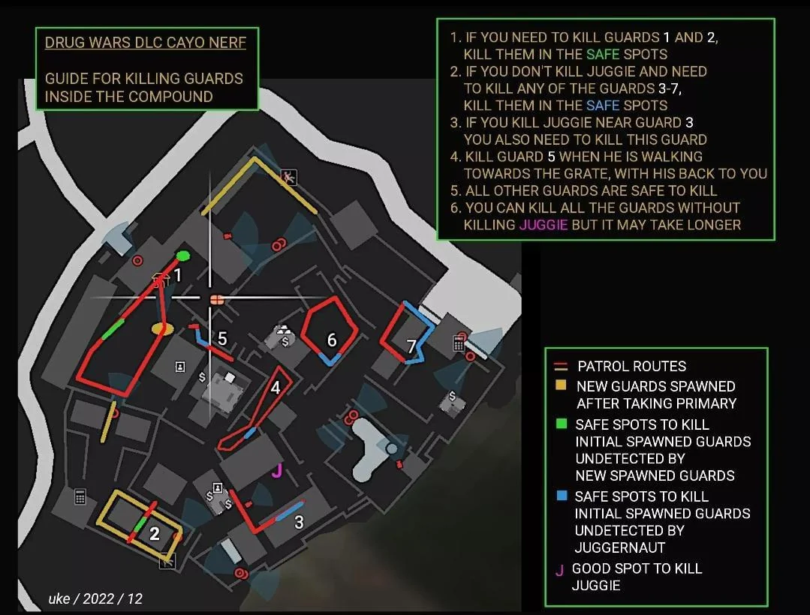
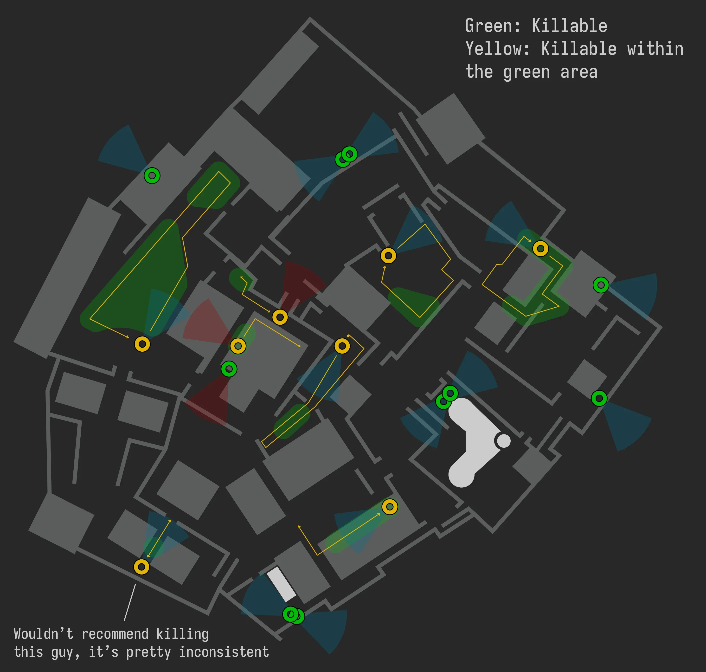

GTA Online: Cayo Perico Heist Tips – a Collection of Resources
After the Drug Wars DLC release in 2022 and the September 2023 nerf, the Cayo Perico heist is now more difficult than in ye olden days. The resources herein claim to be current as of March 2025.
Compound Guards
I have not compiled these maps, nor tested their correctness.
A messy map of both initial and new guards and where they can be killed
A cleaner map of only initial guards and where they can be killed
On their own neither of the above maps is perfect but together they construct a well-informed picture of the guard mechanics. In the latter I question if the guard, who is at the top of the office and comes down the stairs, can really only be killed in the highlighted area. I have traditionally mauled him elsewhere.
On Maximising Profit
This section is a work-in-progress. There is a lot of information to cover and many optimisations to study, but here's what I've found out so far.
The payout is partly up to chance (primary target, cocaine locations), but it can be influenced by:
- setting up the heist as soon as possible to activate hard mode
- setting up the heist after the 72 h cooldown
- completing the elite challenge.
Primary targets, their probabilities before and after the 72 h cooldown, and their values on normal and hard mode:
| Primary Target | < 72 h | > 72 h | Value | Value (hard) |
|---|---|---|---|---|
| Sinsimito Tequila | 60 % | 0 % | $630,000 | $693,000 |
| Ruby Necklace | 15 % | 40 % | $700,000 | $770,000 |
| Bearer Bonds | 15 % | 40 % | $770,000 | $847,000 |
| Pink Diamond | 10 % | 20 % | $1,300,000 | $1,430,000 |
Learn more: GTA BOOM article.
Published 2025-03-17